Dorf & Landschaft
Eine Perle des Weserberglandes
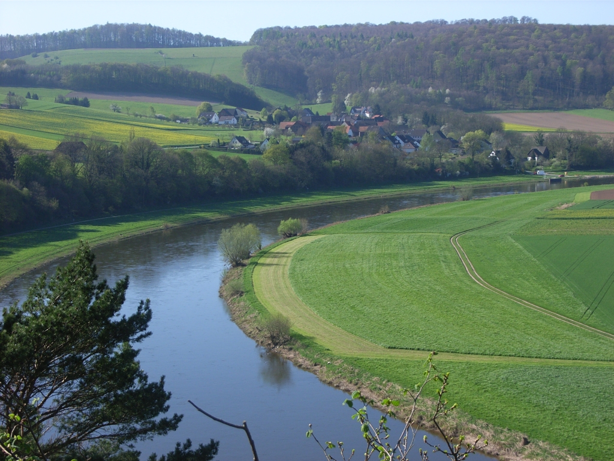
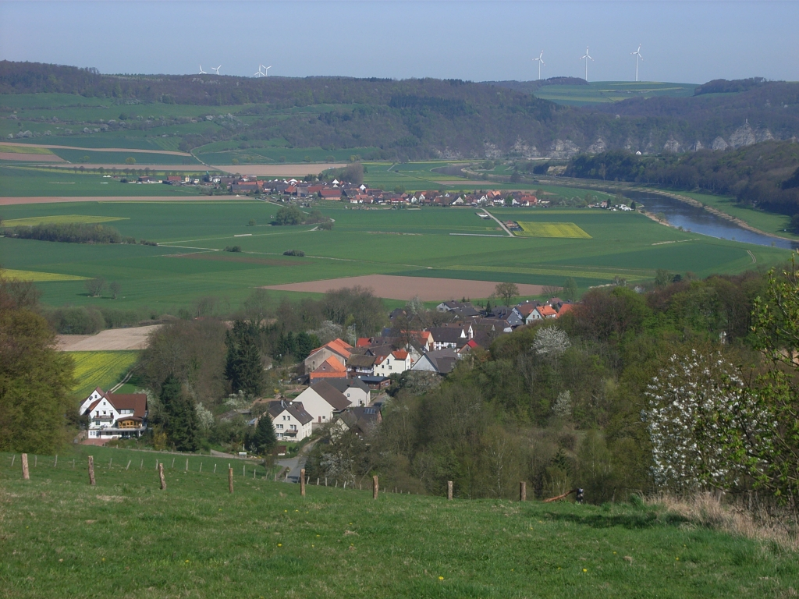
Unsere Ortschaft ist etwa 1000 Jahre alt und erstreckt sich inmitten einer
reizvollen Landschaft am rechten Ufer einer großen Weserschleife. Die umliegende
Feldmark wird von waldreichen Höhenzügen eingegrenzt. Im Süden des Dorfes liegt das
Waldgebiet einer staatlichen Försterei mit vorwiegend Buchen- und Eichenbeständen.
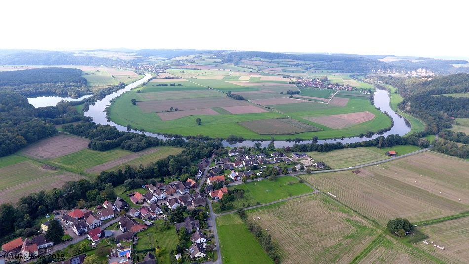
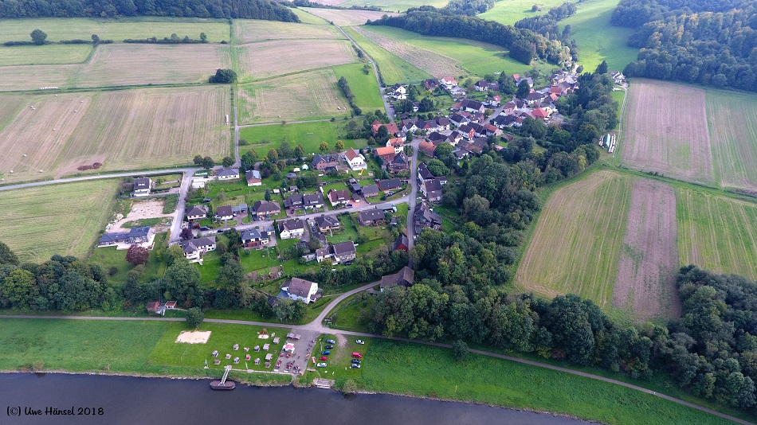
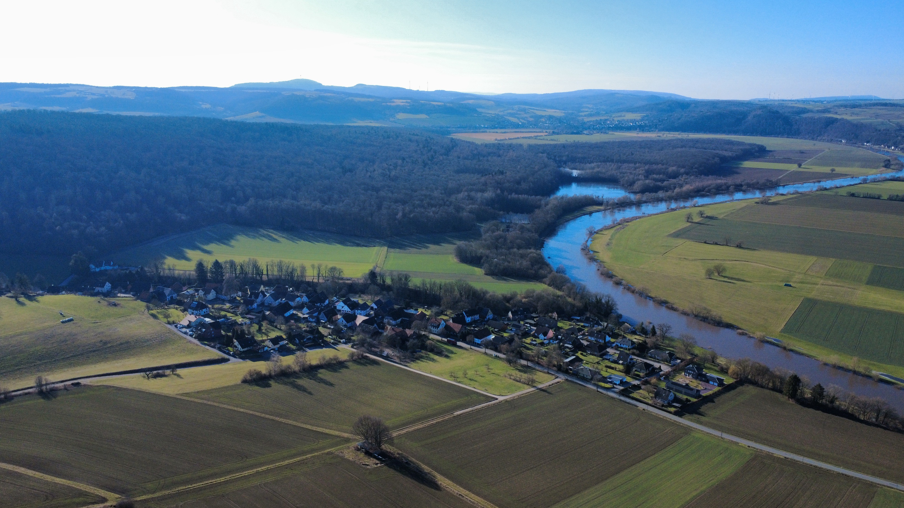
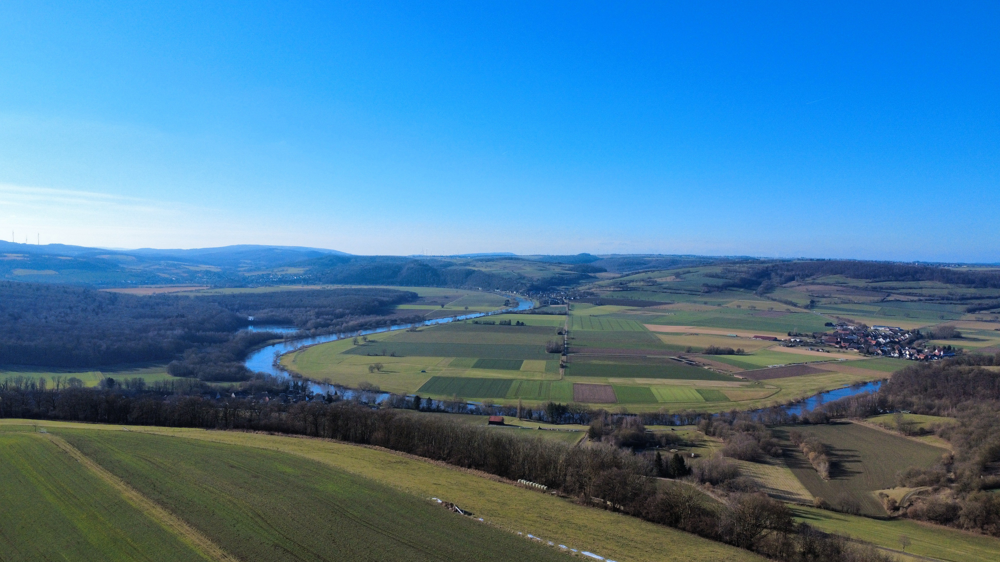
Historische Bilder
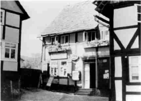
Gemischtwaren-Handel Johanne Rüter von 1955
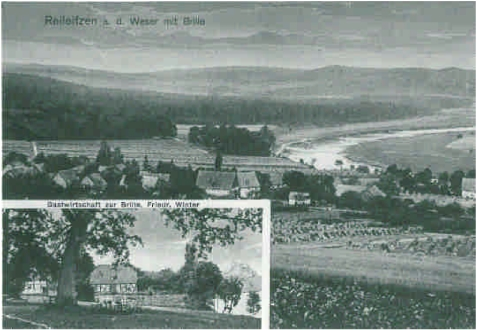
Ansicht Reileifzen von "Vorm Berge"
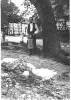
Gänse von Robert Schaper
Reileifzen – das Modelldorf
Reileifzen ist im Dezember 2012 Modelldorf im Landkreis Holzminden geworden,
welches vom Bundesministerium für Ernährung, Landwirtschaft und Verbraucherschutz
gefördert wurde. Besonders hervorzuheben ist hier der Wellnessbereich an der Weser.
Dies konnte alles nur durch die vielen ehrenamtlichen Helfer ermöglicht werden.
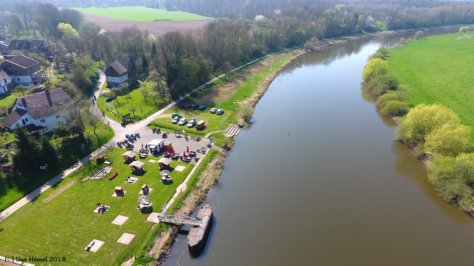
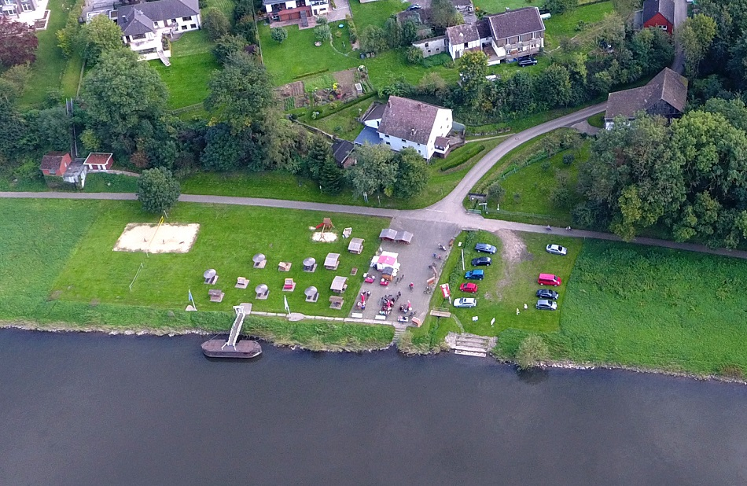
TAH vom 17.12.2012 – Strandkörbe
TAH vom 26.09.2013 – Wellness am Weserufer
Rund um Reileifzen
Insgesamt bietet die umliegende Landschaft zahlreiche Höhepunkte.
Da ist die rekultivierte ehemalige Kiesgrube mit großer Wasserfläche. Viele einheimische Vogelarten
und rastende Zugvögel können dort von einem Aussichtspunkt beobachtet werden, der ebenso wie
der nahegelegene Auenwald vom BUND gefördert wurde.
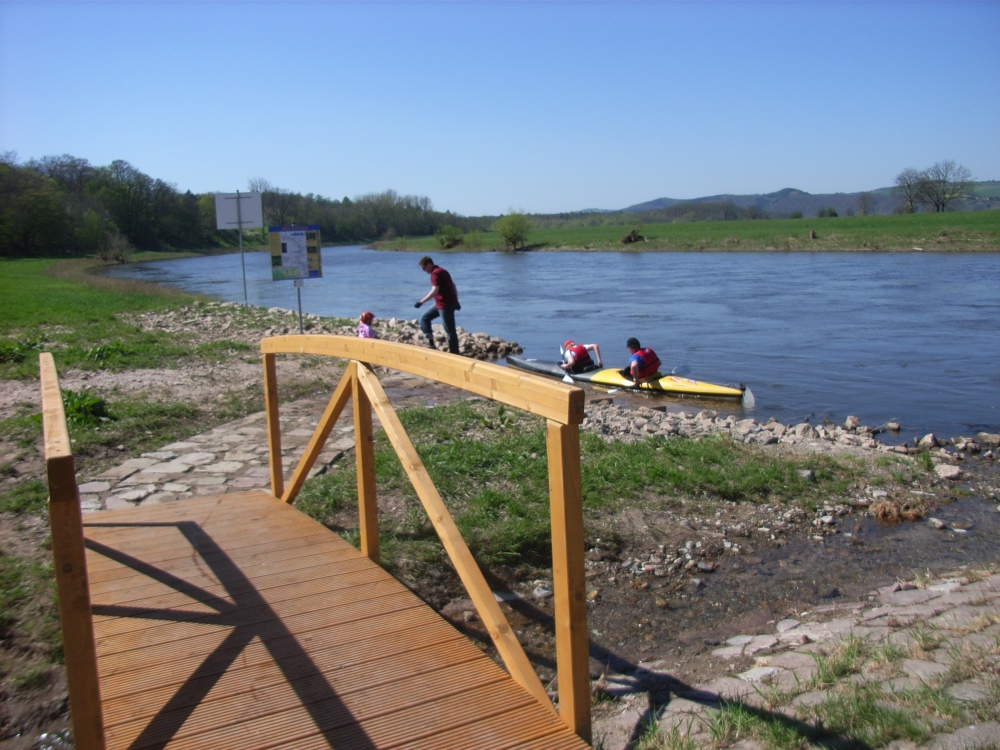
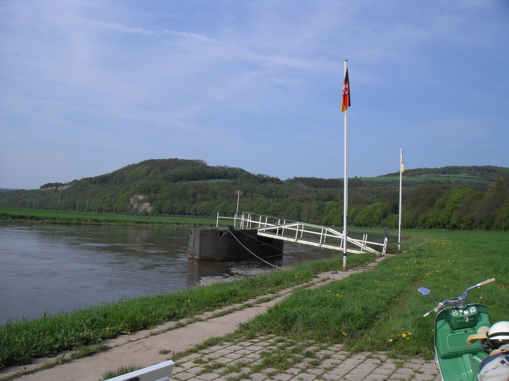
Die Steinbrüche und Felsformationen bieten interessante Einblicke in die erdgeschichtliche Entwicklung
des Muschelkalks. Von den Höhen der Umgebung bieten sich hervorragende Fernsichten an.
Nicht zu vergessen, die Weser mit all ihren Möglichkeiten, vom Kanu bis zum nostalgischen
Raddampfer, die hier auch anlegen können.
Wanderkarte zum Download
Wanderkarte als JPG
Wanderkarte als PDF